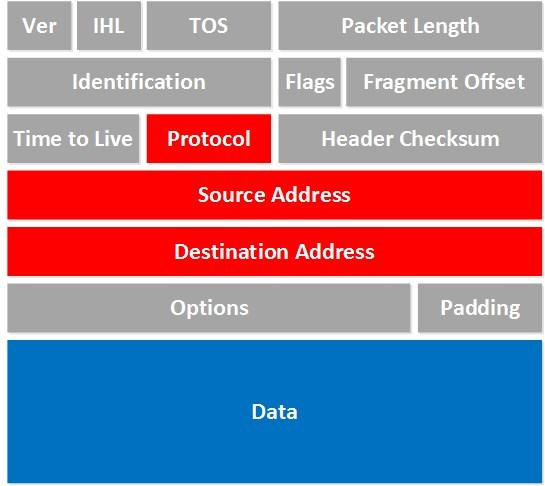
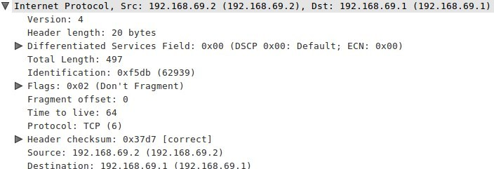
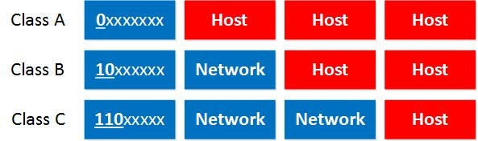
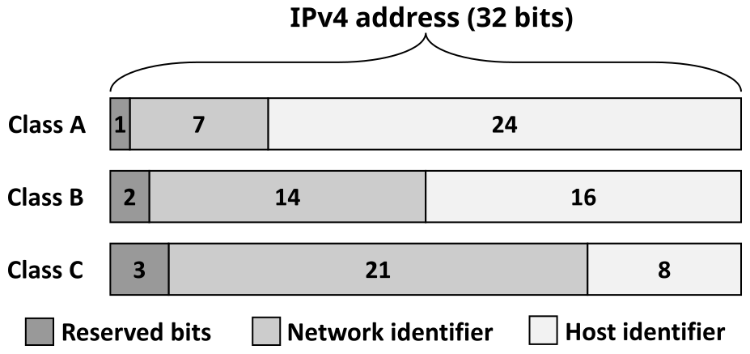

IP (Internet Protocol) Version 4 for CCNA
Quick recap quizاختبار مراجعة سريع
Why do we need IP?ليه أصلاً محتاجين IP؟
IP uses packetsحزمة البيانات called IP packets to carry information. Every IP packet is a single unit of information and, besides data, it carries information to determine where to send the packet. IP determines where to send packets by looking at the destination IP address.
Some characteristics:
- Operates at the network layerالطبقة الثالثة من OSI of the OSI model.
- Connectionlessبدون اتصال — لا يُنشئ جلسة قبل الإرسال protocol: IP itself does not set up a connection; to transport data you need the transport layer and use TCP or UDP.
- Every packet is treated independently; there is no order in which packets are guaranteed to arrive.
- Hierarchicalهرمي — منظم على مستويات: IP addresses have a hierarchy, discussed in depth when we cover subnetting.
We need an IP address to uniquely identify each network device. An IP address is just like a phone number — everyone in a city who has a home phone has a unique phone number where you can reach them.
بروتوكول IP بيستخدم وحدات بيانات اسمها IP packets عشان ينقل المعلومات. كل IP packet هو وحدة معلومات واحدة، وغير البيانات نفسها، بيحمل معلومات تحدد فين المفروض يروح. IP بيقرر يبعت الحزمة فين عن طريق ما يشوف عنوان IP الوجهة.
شوية خصائص:
- بيشتغل على طبقة الشبكة (Network)، يعني الطبقة التالتة في OSI.
- بروتوكول Connectionless — يعني IP نفسه مش بيعمل اتصال قبل ما يبعت؛ عشان تنقل بيانات محتاج طبقة النقل عن طريق TCP أو UDP.
- كل حزمة بتتعامل معاها لوحدها؛ مفيش ترتيب مضمون إنها توصل بيه.
- عناوين IP هرمية (Hierarchical) — هنشرحها بالتفصيل لما نوصل للـ subnetting.
محتاجين عنوان IP عشان نحدد كل جهاز بشكل فريد. عنوان الـ IP زي رقم التليفون بالظبط — كل شخص في المدينة عنده تليفون له رقم فريد تقدر توصله بيه.
32-bit structureتركيبة الـ 32 بت
An IP address is 32-bit and consists of 2 parts: the network part and the host part. We write it down in 4 blocks of 8 bits — 8 bits is what we call a byteبايت — 8 بت (or octetأوكتت — نفس معنى بايت هنا).
عنوان الـ IP طوله 32 بت ومكوّن من جزئين: جزء الشبكة (network) وجزء الجهاز (host). بنكتبه في 4 مجموعات كل مجموعة 8 بت، وكل 8 بت اسمها بايت (أو أوكتت).
Take 192.168.1.1, a very commonly used address on local networks. Here the first 3 bytes are the network address and the last byte is the host address. The subnet maskقناع الشبكة الفرعية — يحدد أي جزء network وأي جزء host — here 255.255.255.0 — tells your computer which part is which. Despite the name, it does not "hide" or "mask" anything.
خد مثال 192.168.1.1 وهو عنوان شائع جدًا في الشبكات المحلية. أول 3 بايتات هي جزء الـ network، والبايت الأخير هو جزء الـ host. الـ subnet mask — هنا 255.255.255.0 — بيقول لجهازك أي جزء network وأي جزء host. برغم الاسم، هو مش بيخفي أي حاجة فعليًا.


The IP packet header (preview)هيدر الحزمة (مقدمة)
The actual IPv4 packet has many fields (Ver, IHL, TOS, Packet Length, Identification, Flags, Fragment Offset, Time to Live, Protocol, Header Checksum, Source Address, Destination Address, Options, Padding, Data). For now, only four fields matter to us:
- Protocol: which transport-layer protocol is used on top of IP — TCP, UDP, or something else.
- Source Address: the IP address of the device that created this packet.
- Destination Address: the IP address of the device that should receive the packet.
- Data: the actual data we are trying to get to the other side.
الحزمة الفعلية فيها حقول كتير (الإصدار، طول الهيدر، نوع الخدمة، طول الحزمة، رقم التعريف، الأعلام، إزاحة الجزء، مدة البقاء، البروتوكول، checksum، عنوان المصدر، عنوان الوجهة، خيارات، بيانات إضافية). دلوقتي هنركز بس على 4 حقول:
- Protocol: بيقول إحنا مستخدمين أي بروتوكول من طبقة النقل فوق IP — TCP ولا UDP ولا غيره.
- Source Address: عنوان الـ IP بتاع الجهاز اللي عمل الحزمة دي.
- Destination Address: عنوان الـ IP بتاع الجهاز اللي المفروض يستلمها.
- Data: البيانات الفعلية اللي بنحاول نوصلها للطرف التاني.
Binary to decimal walkthroughتحويل ثنائي لعشري
Let's convert 192.168.1.1 to binary using the bit-value table: 128, 64, 32, 16, 8, 4, 2, 1.
هنحوّل 192.168.1.1 لثنائي باستخدام جدول قيمة كل بت: 128، 64، 32، 16، 8، 4، 2، 1.

Do the same for each byte: 168 = 128+32+8, and the last two bytes are just 1 each (only the last bit set). That gives us 192.168.1.1.
نفس الطريقة لكل بايت: 168 = 128+32+8، وآخر بايتين قيمتهم 1 بس (آخر بت مفعّل). كده وصلنا لـ 192.168.1.1.
Classes A, B, Cالأصناف A و B و C
There are 3 classes: A, B and C. The difference is how many hosts fit in each network. The first bits are fixed for each class:
في 3 أصناف: A و B و C. الفرق بينهم هو عدد الأجهزة (hosts) اللي تقدر تتحط في كل شبكة. أول بتات كل صنف ثابتة:
| Class | First bits | Range | Structure |
|---|---|---|---|
| A | 0xxxxxxx | 0.0.0.0 – 126.255.255.255 | Network.Host.Host.Host |
| B | 10xxxxxx | 128.0.0.0 – 191.255.255.255 | Network.Network.Host.Host |
| C | 110xxxxx | 192.0.0.0 – 223.255.255.255 | Network.Network.Network.Host |

Class A gives you a LOT of hosts per network but few networks. Class C gives you a LOT of networks but few hosts each. Two things worth remembering: 127.0.0.0 is not really usable as Class A — it's reserved for loopbackحلقة رجوع — لاختبار الجهاز نفسه، مثل 127.0.0.1 (try ping 127.0.0.1). There's also a Class D range starting at 224.0.0.0 used for multicastإرسال متعدد — بث لمجموعة محددة من الأجهزة.
Class A بيدّيك عدد أجهزة كبير جدًا لكل شبكة لكن عدد شبكات قليل. Class C بالعكس، شبكات كتير لكن أجهزة قليلة في كل واحدة. حاجتين تستحق الحفظ: 127.0.0.0 مش قابل للاستخدام فعليًا كـ Class A — هو محجوز لـ loopback (جرب ping 127.0.0.1). وكمان في مدى Class D يبدأ من 224.0.0.0 بيُستخدم لـ multicast.
Private vs public IP addressesعناوين خاصة وعامة
Publicعام — يُستخدم على الإنترنت مباشرة IP addresses are used on the Internet. Privateخاص — للشبكة المحلية فقط، غير مسموح على الإنترنت IP addresses are used on your local area network and should not be used on the Internet.
عناوين IP العامة (Public) تُستخدم على الإنترنت مباشرة. عناوين IP الخاصة (Private) تُستخدم في شبكتك المحلية فقط ومش المفروض تتستخدم على الإنترنت.
| Class | Private range |
|---|---|
| A | 10.0.0.0 – 10.255.255.255 |
| B | 172.16.0.0 – 172.31.255.255 |
| C | 192.168.0.0 – 192.168.255.255 |
192.168.1.1 falls within Class C and is a private address — that's exactly why it's so common on home networks and SOHO routers.
192.168.1.1 واقع جوه Class C وهو عنوان خاص — عشان كده هو شائع جدًا في شبكات البيوت وأجهزة الراوتر الصغيرة.
Network and broadcast addressesعنوان الشبكة وعنوان البث
Two IP addresses in every network can never be assigned to a computer: the network addressعنوان الشبكة — كل بتات الـ host تساوي صفر (used to "define" the network) and the broadcast addressعنوان البث — كل بتات الـ host تساوي واحد، يستقبله كل الأجهزة (received by all devices in the network).
Set all the host bits to 0 and you get the network address. Set all the host bits to 1 and you get the broadcast address. Example with 192.168.1.X: network address is 192.168.1.0, broadcast address is 192.168.1.255.
في عنوانين في أي شبكة مينفعش أبدًا تتحطهم على جهاز: عنوان الشبكة (Network address) (بيُستخدم عشان "يعرّف" الشبكة) وعنوان البث (Broadcast address) (بيستقبله كل جهاز على الشبكة).
لو حطيت كل بتات الـ host = 0 طلع معاك عنوان الشبكة. لو حطيتهم كلهم = 1 طلع معاك عنوان البث. مثال بـ 192.168.1.X: عنوان الشبكة هو 192.168.1.0، وعنوان البث هو 192.168.1.255.
Summaryملخص الدرس
- IP address = 32-bit, split into Network + Host parts, written as 4 bytes.
- Subnet mask decides where the network part ends and the host part begins.
- Class A/B/C differ in how many networks vs hosts they allow.
- Private ranges (10.x, 172.16-31.x, 192.168.x) never appear directly on the Internet.
- Every network reserves a network address (all host bits = 0) and a broadcast address (all host bits = 1) — neither can be assigned to a device.
- عنوان الـ IP = 32 بت، متقسم لـ Network + Host، بنكتبه 4 بايتات.
- الـ subnet mask هو اللي بيحدد فين يخلص جزء الـ network ويبدأ جزء الـ host.
- Class A/B/C بيختلفوا في عدد الشبكات مقابل عدد الأجهزة المسموح بيهم.
- المدى الخاص (10.x، 172.16-31.x، 192.168.x) مينفعش يظهر مباشرة على الإنترنت.
- كل شبكة بتحجز عنوان شبكة وعنوان بث — الاتنين مينفعش يتحطوا على جهاز.
🧠 Lesson quiz🧠 اختبار الدرس
Wrong = red, correct = green. Reveal the answer any time and translate any question with the 🌐 button.غلط = أحمر، صح = أخضر. تقدر تشوف الإجابة في أي وقت وتترجم أي سؤال بزرار 🌐.